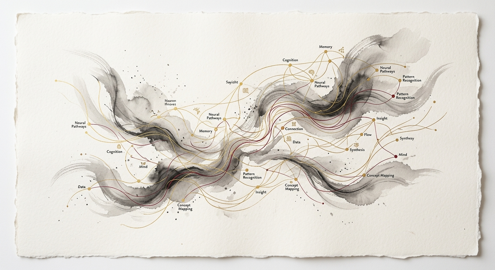
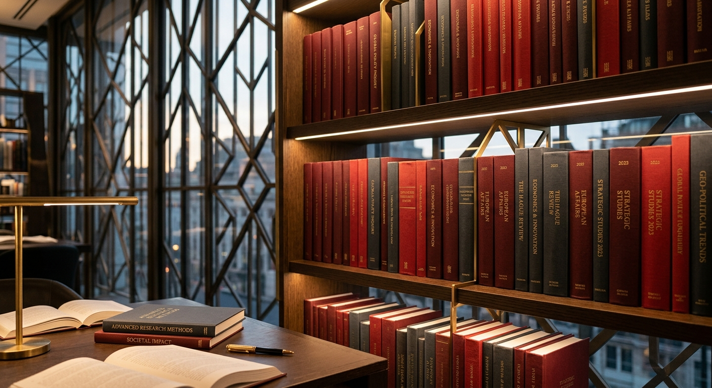
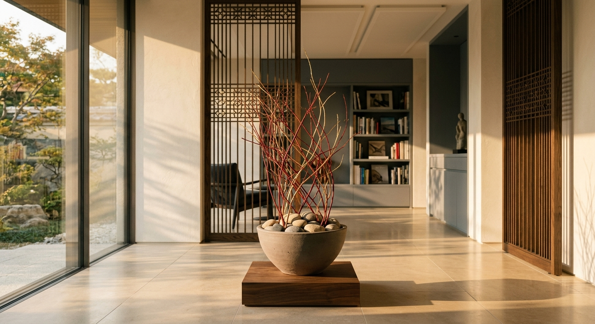

Market & Consumer Insight
Investigating shifting dynamics, emerging subcultures, and consumer cohorts in China and across Asia. Moving past superficial data points to identify core motivations and value clusters.
Understanding people, culture, markets, and behaviour across China and Asia through rigorous research and culturally grounded interpretation.
WisdomAsia was founded by research and consulting professionals who believe that research must continue to evolve alongside markets, societies, and technology. Yet while tools and methodologies change, meaningful understanding of human behaviour still depends on strong foundations in psychology, culture, and the behavioural sciences.
Established in 2004, WisdomAsia brings together commercial research experience, transcultural interpretation, and academically informed behavioural insight across China and Asia.
WisdomAsia approaches markets not merely as economic systems, but as human systems shaped by culture, cognition, values, behaviour, and social change.
WisdomAsia is the China member of the Worldwide Independent Network of Market Research and Opinion Poll (WIN), a global association of independent market research and polling firms spanning multiple countries and regions.
The company’s intellectual foundations were shaped by its founder, Dr. Barry Tse, whose work bridges more than three decades of market and social research experience across Asia with formal academic training in psychology and behavioural science, including a PhD in Psychology.

Investigating shifting dynamics, emerging subcultures, and consumer cohorts in China and across Asia. Moving past superficial data points to identify core motivations and value clusters.
Formulating brand positions grounded in deep cultural context. Bridging global brand philosophies with local social expectations to command resonance and credibility.
Conducting hybrid methodologies custom-engineered for Asian social spheres. Leveraging focus groups, ethnography, large-scale surveys, and tracking studies.
Deciphering structural tensions between localized markets and global mandates. Offering critical transcultural advisory for businesses navigating China.

We operate under the fundamental premise that markets are not merely cold transactional databases or economic frameworks, but complex, organic human systems bound together by shared psychology, cognitive biases, values, and societal progression.
Deciphering consumer shifts requires moving past simple demographic clusters. We track the subtle emotional, cognitive, and physical value orientations of modern cohorts as they balance tradition with hyper-urbanization.
While generative AI and hyper-connectivity alter the tools of daily communication and productivity, deep-seated cultural structures, cognitive frameworks, and linguistic metaphors remain remarkably robust in Asian systems.
By integrating behavioral economics, social cognitive neuroscience, and cross-cultural psychology, we study the authentic human triggers that dictate loyalty, decisions, and structural changes.
Companies operate in broader social structures. We dissect structural values, organisational dynamics, and the deep undercurrents of social transitions to align commercial strategies with societal directions.
We bridge differing operational philosophies. We translate the nuances of local Asian markets into structural frameworks that global corporate executives understand, aligning insights with international strategic agendas.

“We approach markets not merely as systems of transactions, but as human networks bound by culture, cognition, and values.”